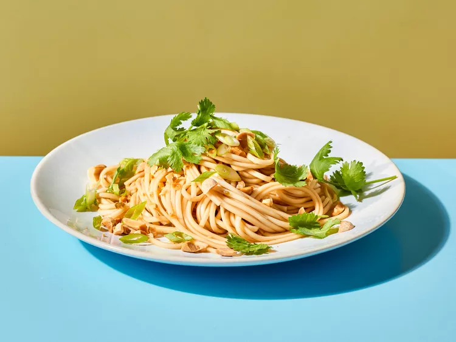

Chilled Lo Mein Noodles with Szechuan Peppercorns Recipe

This kicky dish uses pantry-friendly dried noodles, which are thinner
and a little less chewy than traditional lo-mein.
Ingredients
- 6 ounces dried lo mein noodles (such as Simply Asia)
- 3 tablespoons peanut oil
- 3 tablespoons Chinese black rice vinegar or rice vinegar
- 1 tablespoon less-sodium soy sauce
- 1 tablespoon sugar
- 1 jalapeno pepper, minced (seeded if desired)
- 2 cloves garlic, minced
- 1 teaspoon Szechuan peppercorns, crushed
- 1/4 cup chopped dry-roasted peanuts
- 2 tablespoons chopped green onions
- 1 tablespoon fresh cilantro leaves
Steps
-
Prepare noodles according to package directions. Drain; rinse
with cold water until cool. Drain well. Use kitchen shears to
cut noodles into smaller pieces.
-
For vinaigrette, whisk together oil, vinegar, soy sauce, sugar,
jalapeño, garlic, and peppercorns in a small bowl until sugar
dissolves.
-
In a serving bowl, toss noodles with vinaigrette until well
coated. Top with peanuts, green onions, and cilantro.